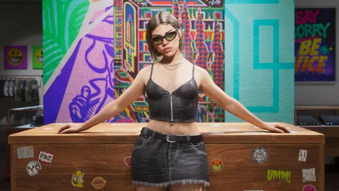

Cortes de cabelo, tatuagens, trajes e acessórios: tudo o que muda a aparência de Jason e Lucia, em três listas expansíveis, com as coleções anunciadas e as lojas apresentadas pela Rockstar.
Nenhum preço de GTA VI foi publicado: cada linha mostra o status, e os preços de GTA V e GTA Online ficam na coluna de referência. As coleções descritas não são uma lista de peças à venda.
Quatro etapas, cada uma com seu status: as capturas, as edições, o Extended Look e depois as entrevistas de Rob Nelson. Nenhum preço, nenhuma lista de peças.
Visto na mídia
Capturas oficiais: o que Jason e Lucia vestem
Regata com estampa “Leonida”, corrente, relógio e boné para Jason; coque alto, brincos de argola e óculos de sol para Lucia. As imagens mostram peças, não uma loja nem um preço.
Imagem oficial da Rockstar Games
Oficial
Edições: três lojas e duas coleções
A edição Ultimate libera a Stock 305 (streetwear de Stockyard), o Sara’s Unisex Salon (cortes de cabelo exclusivos, barba de Jason, maquiagem e unhas de Lucia) e o Electric Fang Tattoo (mais de 50 tatuagens desenhadas pelo FAILE), e adiciona as coleções Vice City Style e Goodtime Gear. O Pacote Vintage Vice City traz um terno de linho pastel e um corte de cabelo retrô para Jason, e um minivestido vermelho de paetês e cachos para Lucia. A Rockstar também cita os ajustes básicos: cabelo, pelos faciais, maquiagem, unhas e tatuagens nos braços, nas pernas e nas costas.
Imagem oficial da Rockstar Games
Visto na mídia
Extended Look: o guarda-roupa no jogo
Lucia escolhe um traje antes de sair à noite enquanto Jason comenta; a dupla assalta postos de gasolina com uma bandana no rosto. Nenhum item tem nome nem preço.
Imagem oficial da Rockstar Games
Oficial
Rob Nelson: milhares de trajes, salões por toda parte
Em entrevista à Famitsu (traduzida em 9 de setembro) e depois ao GamingBible (10 de setembro): “We have thousands of outfits”, ganhos em missões ou comprados, “countless clothing stores and hair salons”; dá para cortar o cabelo no esconderijo, com poucas opções. Para a Dazed (6 de setembro), a estilista Jillian Carr disse que Vice City “is built around vanity”.
Imagem oficial da Rockstar Games
As três listas abaixo organizam tudo isso linha por linha, com o status e a fonte de cada uma, e depois os cortes de cabelo, as tatuagens e as roupas de GTA V e GTA Online com os preços, apresentados como referência.
02
5 painéis
O caderno de estilo
Cinco painéis montados pelo site a partir das imagens oficiais: o que dá para ver de verdade (cortes, cores, tecidos), nada mais. Não são trajes nem bônus oferecidos no jogo, e guardar um estilo não marca nada no seu progresso.

Bustiê preto com zíper, saia jeans desfiada e óculos de sol atrás do balcão
01 Stock 305
Estampas e cores vivas
O que se vê
Bustiê preto com zíper, saia jeans desfiada e óculos de sol atrás do balcão
Casaco de oncinha sobre uma blusa rosa, em frente a uma van pintada de preto e branco
Fachada coberta de murais: rosa, turquesa, amarelo, preto e branco
Agrupamentos editoriais do site para descobrir estilos. As peças exatas, o preço e a loja de cada uma continuam “a confirmar” enquanto a Rockstar não publicar. Os estilos guardados ficam neste aparelho, separados do que você tem.
03
Lista expansível, 55 catalogados, 10 deles confirmados para GTA VI
Todos os cortes de cabelo
Cortes, barba, cor, maquiagem e unhas: o que a Rockstar disse ou mostrou para Jason e Lucia, e depois os cortes de GTA V e GTA Online com os preços, apresentados como referência. Nenhum corte de cabelo tem preço em GTA VI.
Todos os cortes de cabelo55 catalogados, 10 confirmados para o GTA VI, 44 referências da sérieAbrir a lista
A barba e o bigode de Jason são ajustados no Sara’s, segundo o texto da edição Ultimate; a Rockstar também cita os pelos faciais entre os ajustes básicos.
Maquiagem (blush, sombras, batom, pinturas faciais)0 de 6 conhecidos
Como conseguir
Preço
Preço em breve
À venda
Compra a confirmar
Disponibilidade
A confirmar
Origem
Obtenção a confirmar
Onde conseguir
Local em breveReferência da série: Sete salões do GTA Online. Visto em outro jogo da série, não no GTA VI.
Variantes
Variantes conhecidas
A confirmarReferência da série: Blush, Sombra, Batom, Pinturas faciais. Visto em outro jogo da série, não no GTA VI.
Puramente visual
Preço em breveCompra a confirmar
GTA Online: preço não registradopreços não registrados na página consultada
Sete salões do GTA Online
Nenhuma linha corresponde.
Um número do GTA V, do GTA Online, do GTA IV ou do San Andreas fica na coluna “Referência da série”: a coluna do GTA VI continua “a confirmar” enquanto a Rockstar não publicar nada. “Tenho” é salvo neste aparelho e conta em Meu guarda-roupa, seu caderno neste aparelho.
04
Lista expansível, 24 catalogados, 7 deles confirmados para GTA VI
Todas as tatuagens
Partes do corpo, desenhos e coleções: o que a Rockstar disse ou mostrou para Jason e Lucia, e depois as partes e os desenhos do GTA V com os preços, apresentados como referência. Nenhuma tatuagem tem preço no GTA VI.
Todas as tatuagens24 catalogadas, 7 confirmadas para o GTA VI, 15 referências da sérieAbrir a lista
Local em breveReferência da série: Seis estúdios do GTA V. Visto em outro jogo da série, não no GTA VI.
Variantes
Variantes conhecidas
A confirmar
Puramente visual
Preço em breveCompra a confirmar
GTA V: grátisgrátis
Seis estúdios do GTA V
—
Nenhuma linha corresponde.
Um número do GTA V, do GTA Online, do GTA IV ou do San Andreas fica na coluna “Referência da série”: a coluna do GTA VI continua “a confirmar” enquanto a Rockstar não publicar nada. “Tenho” é salvo neste aparelho e conta em Meu guarda-roupa, seu caderno neste aparelho.
05
Lista expansível, 30 catalogados, 20 deles confirmados para GTA VI
Todos os trajes e acessórios
Trajes, partes de cima, partes de baixo, calçados, coleções, e depois óculos, chapéus, joias, relógios e máscaras: o que a Rockstar disse ou mostrou para Jason e Lucia, e o que as lojas do GTA V e do GTA Online vendem, apresentado como referência. Nenhuma peça tem preço no GTA VI.
Todos os trajes e acessórios30 catalogados, 20 confirmados para o GTA VI, 10 referências da sérieAbrir a lista
Looks exclusivos da Stock 305Trajes completosJason e Lucia
Looks únicos para Jason e Lucia na loja de streetwear de Stockyard (edição Ultimate).
“Stockyard’s premiere destination for elevated streetwear” (texto oficial); loja fechada na edição Standard, segundo a imprensa de 24 de junho de 2026.
Local em breveReferência da série: Ponsonbys (três endereços no GTA V). Visto em outro jogo da série, não no GTA VI.
Variantes
Variantes conhecidas
A confirmar
Puramente visual
Preço em breveCompra a confirmar
GTA V: preço não registradopreços não registrados na página consultada
Ponsonbys (três endereços no GTA V)
Nenhuma linha corresponde.
Um número do GTA V, do GTA Online, do GTA IV ou do San Andreas fica na coluna “Referência da série”: a coluna do GTA VI continua “a confirmar” enquanto a Rockstar não publicar nada. “Tenho” é salvo neste aparelho e conta em Meu guarda-roupa, seu caderno neste aparelho.
06
No mapa
Os endereços
Três endereços apresentados pela Rockstar com a edição Ultimate, depois estabelecimentos de moda vistos no mapa. Um estabelecimento visto não é uma loja confirmada.
Na edição Standard, a imprensa de 24 de junho de 2026 indica que os três endereços da edição Ultimate “não estão abertos”; Rob Nelson também promete lojas e salões “incontáveis”.
07
Edições
Coleções anunciadas
O que as edições descrevem como coleções. Uma coleção anunciada não é uma lista de peças à venda: não há nada para marcar aqui, as peças conhecidas estão nas listas acima.
Coleção da edição Ultimate
Estilo de Vice City
Uma seleção de trajes e tatuagens para os dois protagonistas. O detalhe das peças não foi publicado.
Terno pastel de linho e corte de cabelo retrô para Jason; minivestido vermelho de paetês e cabelo cacheado para Lucia. Essas descrições não são nomes de produtos inventados.
As perguntas que as pessoas digitam num buscador, com respostas curtas e datadas.
Dá para trocar de corte de cabelo no GTA 6?
Sim: no esconderijo, com poucas opções, ou em um salão, com muito mais cortes, segundo Rob Nelson. O Sara’s Unisex Salon (edição Ultimate) adiciona cortes de cabelo exclusivos, a barba de Jason, a maquiagem e as unhas de Lucia. Preços não publicados; no GTA V, um corte custa de $ 20 a $ 450.
Dá para fazer tatuagem no GTA 6?
Sim. A Rockstar cita os braços, as pernas e as costas; o Electric Fang Tattoo (edição Ultimate) oferece mais de 50 tatuagens desenhadas pelo FAILE. Preços não publicados; no GTA V, um desenho custa de $ 50 a $ 550 e pode ser removido de graça.
Quantos trajes tem o GTA 6?
“Milhares”, segundo Rob Nelson, comprados em lojas ou ganhos em missões, em lojas “incontáveis”. A Stock 305 (edição Ultimate) vende looks exclusivos de streetwear. Nenhum preço foi publicado.
Tem acessórios (óculos, joias, relógios) no GTA 6?
As capturas oficiais mostram alguns: óculos de sol, brincos de argola de Lucia, corrente, relógio e boné de Jason; a coleção Goodtime Gear inclui acessórios. Nenhum é vendido separadamente até agora.
O que o Pacote Vintage Vice City traz em termos de estilo?
Um terno de linho pastel e um corte de cabelo retrô para Jason, um minivestido vermelho de paetês e cachos para Lucia, além de um padrão tropical para a maioria das armas, o Stanier ’55 e a garagem Shore Court. Só para compras feitas antes de 20 de novembro de 2026.
11
24 fontes consultadas
Verificação e fontes
Cada linha das listas e cada afirmação desta página têm um status e levam a uma página aberta na data indicada. As páginas da Rockstar são citadas com a última abertura direta; os textos delas foram relidos em 27 de setembro de 2026 nas fontes que os reproduzem.
Oficial
Nomeado ou descrito pela Rockstar: página do site oficial, Newswire, vídeo ou texto oficial reproduzido pela imprensa.
Visto na mídia
Visível em um trailer, em uma captura oficial ou no Extended Look. Existe na tela; não se sabe o preço nem se dá para comprar.
Identificação da comunidade
Comparação feita por jogadores (wiki, gtadb.org), citada como tal, nunca apresentada como confirmada.
Referência da série
O que o GTA V, o GTA Online, o GTA IV ou o San Andreas fazem. Um preço da série fica na coluna dele: não vale para o GTA VI.
A confirmar
Nada publicado pela Rockstar. A linha existe para dizer o que se espera, não para afirmar.
Rob Nelson: “Food affects Jason and Lucia’s weight, while exercising visibly builds and tones their muscles”; noites sem cama, fuga ou uma “multi-day bender” marcam os traços deles. Jillian Carr, estilista: Vice City “is built around vanity”, as tendências mudam rápido. Moradores tatuados, com piercings, de camisas havaianas retrô, ternos, luxo ou roupa de combate cheia de lama.
Reúne os detalhes publicados pela Rockstar em 24 de junho de 2026: troca de corte de cabelo para cada personagem, pelos faciais para Jason, maquiagem e unhas para Lucia, tatuagens nos braços, nas pernas e nas costas, trajes, roupas e acessórios. Revisado para o lote 6: “wide selection of artistic and performance-based vehicle mods”, armas da edição Ultimate com “customized grips, various engravings, and different scopes”, estampa de arma exclusiva do Pacote Vintage.
Texto oficial dos negócios da edição Ultimate: Stock 305 e Electric Fang em Stockyard, Sara’s Unisex Salon, Rideout Customs, One-Eyed Willie’s em Lake Leonida.
Rob Nelson: corte de cabelo no esconderijo com poucas opções, “If you want to try lots of hairstyles, you’ll have to go to a salon”; milhares de trajes, comprados ou ganhos em missões. Revisado para o lote 6: roubo de carros de luxo (clonador de chaves, alarme, rastreador que pode enviar sua posição à polícia).
Reproduz as descrições oficiais dos cinco negócios da edição e nomeia as coleções Goodtime Gear e Vice City Style a partir das capturas oficiais. Conferido de novo para o lote 6: Rideout Customs “specializing in unique interiors, rims, and donk stylings”, One-Eyed Willie’s “off-road modifications and hand-painted automotive liveries”, variantes de armas “featuring classic Vercetti Estate-inspired styling, including palm-tree-etched grips, engraved detailing, and a scope”.
“We’ll also show you them having their morning coffee”; “round things off with a protein shake and a protein bar”; “Food provides buffs that strengthen your meters”; três dias de treino seguidos fazem a saúde e a força subirem; “We have thousands of outfits”, ganhos em missões ou comprados; “countless clothing stores and hair salons”; corte de cabelo possível no esconderijo, com poucas opções; armário da Ammu-Nation para as armas longas; armas exclusivas conforme a loja; dar golpes em lojas, destruir as câmeras. Relido para o lote 6: Pay ’n’ Spray (consertar e repintar para despistar a polícia; “you can basically only change the color there, so if you want an elaborate paint job, you’ll need to take it to a tuning shop”), alarmes e rastreadores dos carros de luxo, clonador de chaves, receptadores que retiram o rastreador, garagens para comprar, armário da Ammu-Nation para as armas longas, “Ammu-Nation also sells special guns exclusive to particular stores”, “There are also more weapon customization options than ever before”.
As imagens de img/officiel vêm daqui: Jason no balcão de um bar, Lucia à beira da piscina, Stock 305, Sara’s Unisex Salon, Electric Fang Tattoo, The Rusty Anchor. Uma imagem mostra um item; ela não diz o preço nem se dá para comprar. Lote 6: as capturas da Rideout Customs (Albany dourado com rodas superdimensionadas, interior vermelho, cupê amarelo elevado), One-Eyed Willie’s (Canis verde pintado à mão, pneus off-road, para-choque com guincho), Ganado Retro Build, Personalized Weapon Variants (pistolas gravadas), Vintage Vice City Weapon Pattern (submetralhadora e pistola com estampa tropical), Stanier ’55 bicolor, fuzil dourado de Vice City.
Textos das edições: Stock 305, Sara’s Unisex Salon, Electric Fang Tattoo, coleções Vice City Style e Goodtime Gear, looks do Pacote Vintage Vice City. Conferidos em 27/09/2026 no VGC e no TheSixthAxis, que os reproduzem.
Texto oficial do Pacote Vintage: terno de linho “vintage pastel” para Jason, minivestido vermelho de paetês e cachos para Lucia, estampa tropical para a maioria das armas, Stanier ’55 e garagem Shore Court. Revisado para o lote 6: as duas oficinas oferecem “a wide selection of artistic and performance-based vehicle mods”; Ganado: “exclusive mods including a cab spoiler, rear aerials, and special livery”; One-Eyed Willie’s: “Transform off-road vehicles with exclusive mods and even attain custom hand-painted masterpieces”; Morgan: “palm-tree-etched grips, engraved detailing, high-performance scope, and personalized finishes”; estampa Vintage: “Tropical pattern available to adorn most guns”; garagem Shore Court com “a weapon locker to customize your loadout for any occasion”.
Texto oficial das edições: Vice City Style (“exclusive outfits, tattoos, and more”), Goodtime Gear (roupas e acessórios inspirados em Macca the Gator), Sara’s Unisex Salon (cortes de cabelo exclusivos, pelos faciais de Jason, maquiagem e unhas de Lucia), Stock 305 (streetwear de Stockyard), Electric Fang Tattoo (mais de 50 tatuagens exclusivas desenhadas pelo coletivo FAILE). Revisado para o lote 6: Rideout Customs (“Transform vanilla vehicles into magnificent works of art with detailed interiors, exquisite rims, and donk stylings”), One-Eyed Willie’s (“specializes in off-road modifications and hand-painted automotive artistry”), Ganado (“exclusive mods”), variantes de armas (“Personalized sidearms with detailed engravings for Jason’s Girardi ES9 pistol and Lucia’s Klose K17 pistol”), Morgan (“palm-tree-etched grips, engraved detailing, and high-performance scope”), garagem Paradise com armário de armas.
Texto oficial do pacote: Stanier ’55 e garagem Shore Court perto de Ocean Beach; para Jason, “effortlessly chic linen suit in vintage pastel, complemented by the cut and coif of the decade of decadence”; para Lucia, “red sequin mini dress and curls”; estampa tropical inspirada na camisa de Tommy Vercetti.
Visto durante a transmissão: tortilla chips comidos na rua, comercial de hambúrguer na TV, academia, golpes a postos de gasolina de bandana, Lucia entrando em uma loja com a arma nas costas e saindo com uma sacola, Lucia escolhendo um traje antes de uma balada, dançarinas do clube.
Transmissão de 27 de agosto de 2026, 26 min 48 s; bar Effluvia em um terraço de Vice Beach onde Jason e Lucia encontram Brian e Lori; Lucia escolhe um traje para uma balada.
Base aberta da comunidade (CC BY 4.0, creditada no mapa do site): cada prédio é associado a um endereço real; é dela que vêm as lojas do mapa (Xero, 24/7, Taco Bomb, Uncle Jack’s Liquor, A1 Fashions…). Ver uma loja não prova que dá para comprar alguma coisa ali.
Sete salões; cortes masculinos de $ 170 (buzzcut) a $ 5.995, cortes femininos de $ 175 (maria-chiquinha) a $ 6.770, barbas de $ 150 a $ 5.000, lentes de contato coloridas de $ 4.500 a $ 19.000; maquiagem (blush, sombras, batom, pinturas faciais), sobrancelhas, pelos do peito. “Puramente cosmético”.
Bob Mulét (alto padrão, Rockford Hills) e os salões comuns Herr Kutz, Hair on Hawick, Beach Combover, O’Sheas; cortes de $ 20 a $ 450 conforme o personagem e o salão, barba de $ 20 a $ 100, barbear $ 20 ou $ 50, cortes do Social Club de graça.
Categorias: peças de cima, calças, calçados, chapéus, acessórios, óculos, trajes, máscaras; todas as lojas vendem o mesmo estoque; um traje do qual você já tem todas as peças custa $ 100.
Máscaras de $ 50 (macaco) a $ 500 (hóquei branco), monstro verde $ 270; camisetas e regatas de $ 10 a $ 38; abre depois do golpe das máscaras no GTA V e, no online, desde o começo.
A apresentação descreve um veículo e sua garagem, trajes e cortes de cabelo, além de um padrão de arma. Ela não confirma a compra separada no jogo.
O que não fazemos. Nenhum preço nem efeito do GTA VI inventado, nenhum dado vindo de vazamentos, nenhuma imagem que não seja oficial. Os status são explicados no Tutorial. Conteúdos verificados em 23/09/2026; o GTA VI está anunciado para 19 de novembro de 2026. Este acompanhamento pessoal não confirma que um conteúdo já esteja disponível no jogo.
A calculadora
Qual orçamento para seus trajes?
Escreva o que você quer comprar e o que você ganha: você vê o que cabe no seu orçamento.